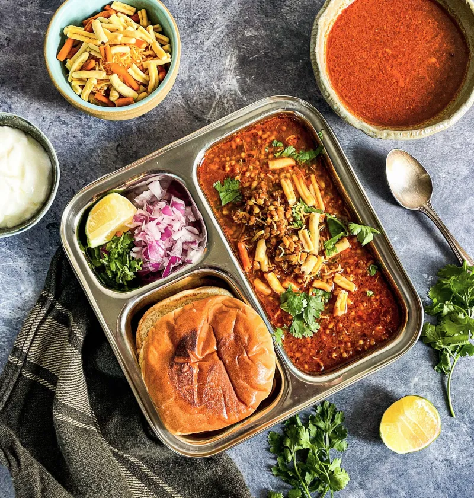
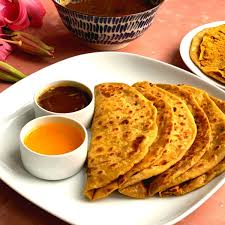

Serving Size:Serves 4
Prep Time:
20 min (+8 hrs soaking)
Cook Time:
40 min
Total Time:
~9 hrs
Ingredients:
For Misal:
• 2 cups sprouted moth beans
• 2 onions, chopped
• 2 tomatoes, chopped
• 1 tbsp ginger-garlic paste
• 2 tbsp misal masala
• 2 tbsp oil
For Kat/Rassa:
• 1/2 cup grated coconut
• 4 dried red chilies
• 1 tsp garam masala
For Garnish:
• 1 cup farsan/mixture
• 1 onion, chopped
• 1/4 cup coriander, chopped
• Lemon wedges
• Butter pav
`,
`
Instructions:
1. Soak moth beans overnight, drain and sprout (8 hrs).
2. Pressure cook sprouted beans with salt for 2 whistles.
3. Heat oil, sauté onions, ginger-garlic paste, and tomatoes.
4. Add misal masala, cook 2 min.
5. Add cooked beans, mix well.
6. For kat: roast coconut, chilies, blend with garam masala and water.
7. Add kat to beans, simmer 10 min.
8. Serve in bowl, top with farsan, onions, coriander, lemon. Serve with buttered pav.`)">
Misal Pav
Serving Size:Serves 8
Prep Time:
30 min
Cook Time:
40 min
Total Time:
1 hr 10 min
Ingredients:
For Puran:
• 1 cup chana dal
• 1 cup jaggery
• 1/2 tsp cardamom powder
• 1/4 tsp nutmeg powder
For Poli:
• 2 cups whole wheat flour
• 1/4 tsp salt
• Water for kneading
• Ghee for cooking
`,
`
Instructions:
1. Cook chana dal until soft, drain excess water.
2. Add jaggery, cook until mixture thickens.
3. Add cardamom and nutmeg powder, cool.
4. Knead flour with salt and water to soft dough.
5. Divide dough and puran into balls.
6. Stuff dough balls with puran, roll gently.
7. Cook on hot tava with ghee until golden.
8. Serve hot with more ghee.`)">
Puran Poli